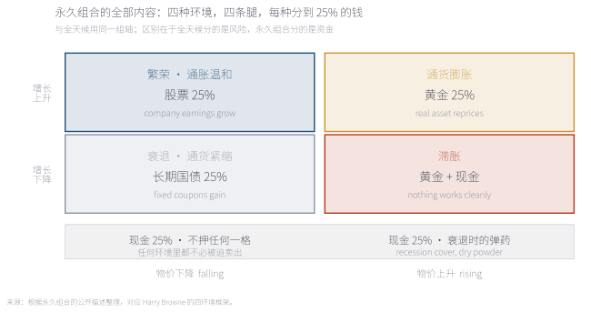
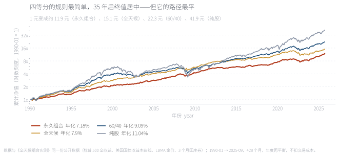
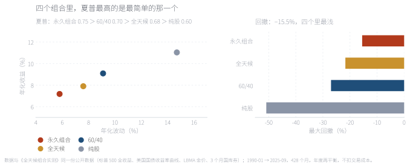
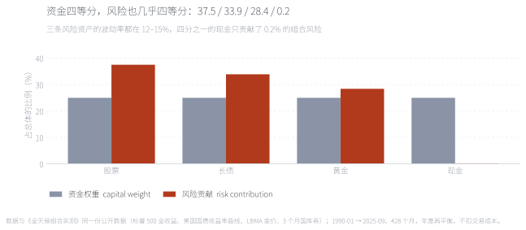
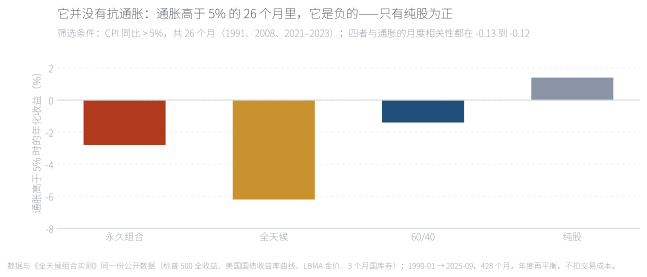
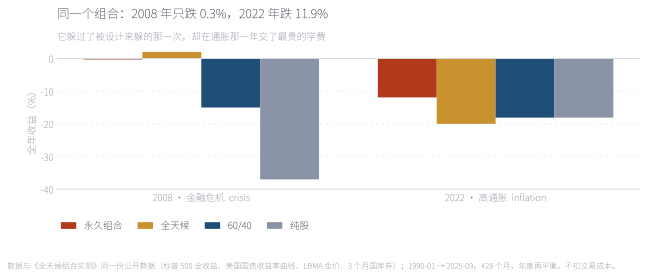
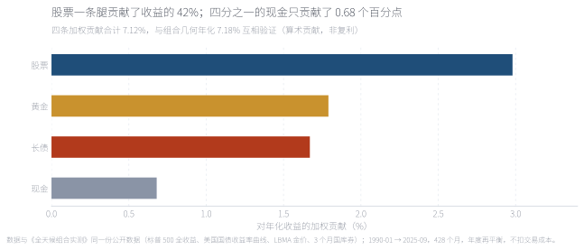
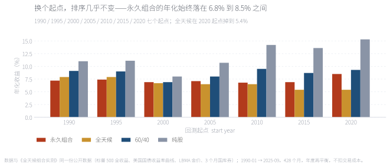

把资金分成四份——股票、长期国债、黄金、现金各 25%——大概是投资书里最简单的一条规则。1990-01 至 2025-09 共 428 个月的美国数据显示：它年化 7.18%、波动 5.8%、最大回撤 −15.5%、夏普 0.75，在四个对比组合里波动最低、回撤最浅、夏普最高，而且对起点最不敏感。但它赢的原因和它自己讲的故事不一样。它的黄金腿在 CPI 高于 5% 的 26 个月里年化 −2.95%，最大的一次回撤发生在 2022 年而不是 2008 年——它没有抗住通胀。真正让它赢的是另一件事：四等分的资金，几乎正好变成了四等分的风险（37.5 / 33.9 / 28.4 / 0.2）——全天候花力气宣称却没能做到的事，它靠简单做到了。 Split your money four ways — stocks, long-term Treasuries, gold and cash, 25% each — and you have probably the simplest rule in investing. On 428 monthly US observations from January 1990 to September 2025 it returned 7.18% a year with 5.8% volatility, a −15.5% maximum drawdown and a Sharpe ratio of 0.75 — the lowest volatility, shallowest drawdown and highest Sharpe of the four portfolios tested, and the least sensitive to the start date. But it wins for a different reason than the one it advertises. Its gold leg lost 2.95% a year across the 26 months when CPI inflation ran above 5%, and its worst drawdown came in 2022, not 2008. What actually makes it work is that an even split of money turns out to be very nearly an even split of risk (37.5 / 33.9 / 28.4 / 0.2) — the thing All Weather claims and fails to deliver, achieved by not trying.
关键词 永久组合 · 四等分 · 1/N · 风险贡献 · 再平衡 · 通胀对冲Keywords Permanent Portfolio · equal weight · 1/N · risk contribution · rebalancing · inflation hedging
永久组合是 Harry Browne 在 1980 年代提出、并在 1999 年的《Fail-Safe Investing》里写成规则的一种配置：股票、长期国债、黄金、现金各 25%，不加杠杆，不预测宏观，按固定规则再平衡。它的论证不是「这四类资产预期收益最高」——恰恰相反，它承认其中至少两条腿在大多数时候是拖后腿的——而是「没有人知道下一个十年是哪种环境」。
Browne 把经济状态分成四种：繁荣、通货膨胀、衰退、通货紧缩（银根紧缩）。每一种状态都会让某一类资产大涨、让其余的难受：繁荣时企业盈利上升，股票受益；通胀与货币贬值时，黄金这类实际资产重估；通缩和衰退时利率下行，长期国债的票息变得更有价值；银根紧缩、信贷冻结时，现金本身就是最有价值的资产。既然无法预测哪一种先来，就每种都买一份，每份一样大。

这张图不是回测，是这个策略的全部主张。它和《全天候组合实测》用的是同一组轴，差别只有一句话：全天候分的是「风险」，永久组合分的是「钱」。这个差别看起来只是措辞，实际决定了后面所有结果——全天候为了让四个格子的风险相等，必须把 40% 押在长久期债券上（或者加杠杆）；永久组合只承诺每格 25% 的资金，于是它不需要协方差矩阵，也不需要借钱，代价是四个格子的风险天然不等。
This is not a backtest but the whole claim. It uses the same axes as the All Weather note, and the difference is one sentence: All Weather divides risk; the Permanent Portfolio divides money. That sounds like wording, but it decides everything downstream — equalising risk across four cells forces All Weather into a 40% long-bond weight (or leverage), while equalising money requires no covariance matrix and no borrowing, at the cost of unequal risk across cells.
来源：根据永久组合的公开描述整理；现金一格对应 Browne 所说的银根紧缩与衰退。Source: compiled from the public description of the strategy; the cash cell corresponds to Browne's tight-money recession.
先看一个容易被忽略的算术事实。四条腿的长期年化波动率差别极大：股票 14.7%、长债 13.1%、黄金 12.2%——三条风险资产挤在 12% 到 15% 这个窄区间里；而现金（3 个月国库券）只有 0.7%。这意味着把资金四等分，得到的风险分布不是 25 / 25 / 25 / 25，而是三条腿各约三分之一的风险，再加一块几乎不动的压舱石。这正是下一节要检验的核心。
| 腿Leg | 它负责的环境Environment it covers | 作用Role | 年化波动Volatility |
|---|---|---|---|
| 股票Equities | 繁荣Prosperity | 增长引擎Growth engine | 14.7% |
| 长期国债Long bonds | 通缩 · 衰退Deflation · recession | 利率下行的受益者Benefits when rates fall | 13.1% |
| 黄金Gold | 通胀 · 货币贬值Inflation · debasement | 实际资产的替代品Real-asset substitute | 12.2% |
| 现金Cash | 银根紧缩Tight money | 流动性；不必被迫卖出Liquidity; never a forced seller | 0.7% |
第二件事是它主动放弃了所有需要估计的东西。均值—方差最优、风险平价、Black-Litterman，第一步都要估预期收益或协方差；估计本身带来的误差往往比资产配置的差异更大。DeMiguel、Garlappi 与 Uppal 在 2009 年用 14 个数据集比较了 1/N 等权与十几种数据驱动方法，发现等权在大多数情况下并不输——原因不是等权聪明，而是它什么都不估。永久组合是这件事的极端版本：它连资产集都提前定好了，只剩一个动作，就是每年把四份拉回 25%。
第三件事是它对执行者的要求也很低。没有杠杆，所以不存在融资成本和追加保证金；没有择时，所以不需要判断；没有故事，所以不需要向任何人解释为什么这一季跑输了。最后一点在机构里往往是致命的：一个前台团队很难向客户说明「我们故意用 25% 的现金和 25% 的黄金拖住收益，因为我们要买一份保险」。这也是为什么这条最简单的规则，主要活在个人投资者和家族办公室那里。
样本为 1990-01 至 2025-09 共 428 个月，与《全天候组合实测》完全同一份公开数据：股票＝标普 500 全收益；长债＝30 年期美国国债（按久期 15 用收益率曲线合成）；黄金＝LBMA 伦敦金价月序列；现金＝3 个月美国国库券。对照组沿用该文的三个组合：大众版全天候（30% 股票 / 40% 长债 / 15% 中债 / 各 7.5% 黄金与商品）、60/40（60% 股票 + 40% 的 10 年期国债）、纯股。
有一个口径上的改动需要写明。《全天候组合实测》里，四个组合的权重是每月回到固定值的；本篇改为真正的年度再平衡——每年 1 月重置回目标权重，年内让权重随价格漂移。更接近永久组合的实际做法，也才让「再平衡」这件事真的发生在组合里。两个口径的完整对照放在附录 A 的表里：年度再平衡让所有多资产组合的年化略高（因为赢家在年内可以多跑一段），但四个组合的排序、以及本篇的全部结论都不变。风险贡献、归因与交互图都按年度再平衡的时变权重计算。
需要提前说明的是，本文检验的是永久组合的公开描述，不是任何人的真实账户。真实的永久组合在资产选择上有大量变体（黄金可以一半换成金矿股，股票可以一半换成小盘股，债券可以拆成短、中、长三段），再平衡阈值也常写成「某一腿涨到 35% 或跌到 15% 就调回 25%」。本文用的是最广为人知的四等分版本。

对数刻度，斜率就是年化增速。永久组合（红）是最平的那条：1 元最终变成 11.9 元，全天候 15.1 元，60/40 22.3 元，纯股 41.9 元。这条线看起来最"无聊"，但它的意义不在终值，而在路径——它是唯一一条在 2008 年几乎不回头的线。
On a log scale the slope is the growth rate. The Permanent Portfolio is the flattest line: 1 unit ends at 11.9, against 15.1 for All Weather, 22.3 for the 60/40 and 41.9 for equities. The point is not the endpoint but the path — it is the only line that barely broke stride in 2008.
来源：本文回测，年度再平衡，不扣交易成本。Source: author's backtest, annual rebalancing, before transaction costs.

左图里永久组合落在最左下角：5.8% 的波动换 7.18% 的年化。它比 60/40 少赚 1.9 个百分点，但最大回撤浅了 11.5 个百分点（−15.5% 对 −27.0%），最差的 12 个月是 −13.5%，而 60/40 是 −24.0%、纯股 −43.3%。夏普 0.75 是四个里最高的——这也是本文最反直觉的结果之一：一个不做任何优化的规则，风险调整后打败了一个被认真设计过的风险平价产品（全天候 0.68）。
The Permanent Portfolio sits bottom-left: 5.8% volatility for 7.18% a year. It earns 1.9 points less than the 60/40 but carries an 11.5-point shallower maximum drawdown (−15.5% against −27.0%), and its worst twelve months is −13.5% against −24.0% and −43.3%. Its Sharpe of 0.75 is the highest of the four — a rule with no optimisation in it beats a deliberately designed risk-parity product (All Weather, 0.68) on risk-adjusted terms.
来源：本文回测；夏普以 3 个月国库券为无风险利率。Source: author's backtest; Sharpe uses three-month T-bills as the risk-free rate.
把它拆成具体年份会更清楚：35.7 年里有 34 个完整年份，它只有 6 年亏钱，其中 5 年的亏损都在 3% 以内（1994 −2.7%、2008 −0.3%、2013 −2.7%、2015 −2.2%、2018 −1.0%），唯一的例外是 2022 年的 −11.9%。滚动持有 12 个月，亏钱的窗口占 11.8%，四个组合里最低（60/40 为 14.9%，纯股 16.5%）。
这是全文最重要的一张图，因为它是这个策略唯一真正的机制。把组合的方差按四条腿分解（用年度再平衡下的时变权重），25% 的资金对应的是：股票 37.5%、长债 33.9%、黄金 28.4%、现金 0.2%。

三条风险资产的风险贡献落在 28% 到 38% 之间，而四分之一的现金只贡献了 0.2% 的组合风险。换句话说，这个组合在风险层面实际上是「三条腿各三分之一 + 一块现金」；四等分资金之所以有效，是因为它恰好让三条波动率相近的腿各自拿到了相近的风险，而现金那一份自动变成了不产生风险的压舱石。对照大众版全天候：它的资金权重是 30/40/15/7.5/7.5，风险贡献却是 32.4 / 53.5 / 10.5 / 2.4 / 1.2——宣称「四个环境各 25% 风险」的那个没做到，只承诺「四等分资金」的这个做到了。
The three risky legs land between 28% and 38% of the risk, while the quarter in cash contributes 0.2%. In risk terms the portfolio is really "a third each in three legs plus a ballast". Equal money works because the three legs happen to have similar volatilities, so each receives a similar share of risk, and the cash quarter drops out of the risk budget entirely. Compare the retail All Weather: capital weights of 30/40/15/7.5/7.5 become risk contributions of 32.4 / 53.5 / 10.5 / 2.4 / 1.2. The portfolio that promises equal risk does not deliver it; the one that only promises equal money does.
来源：本文计算，全样本协方差 × 年度再平衡的时变权重；35.7 年的平均权重为 25.4 / 24.8 / 25.2 / 24.6。Source: author's calculations, full-sample covariance with annual-rebalancing time-varying weights; average weights over 35.7 years were 25.4 / 24.8 / 25.2 / 24.6.
这里要说清楚一件事，免得被读成"四等分总是对的"：这个结果依赖于资产的选择。三条腿的波动率刚好都在 12% 到 15%，是 Browne 挑资产的结果，不是数学定理。如果把长债换成 2 年期国债（波动率低得多），或者把黄金换成商品（波动率高得多），等资金的分配就会明显偏离等风险，回报也会变差。真正可迁移的那句话是：等权是一种不需要估计的默认值，它在资产波动率相近时表现最好——这也正好解释了 DeMiguel 等人 2009 年的结论。
永久组合最常被推销的功能，是「黄金腿保护你免受通胀伤害」。检验方式很直接：按月筛选 CPI 同比高于 5% 的月份——428 个月里有 26 个，集中在 1991 年初、2008 年三季度和 2021–2023 那一轮——然后看各组合在这些月份里的表现。

结果和宣传相反：通胀高于 5% 的月份里，永久组合年化 −2.8%，全天候 −6.2%，60/40 −1.4%，只有纯股为正（+1.4%）。拆到每条腿：黄金 −2.95%、长债 −12.65%、股票 +1.36%、现金 +1.88%。四个组合与通胀的月度相关系数都在 −0.12 到 −0.13 之间，符号是负的。被雇来对冲通胀的那条腿，在最需要它的 26 个月里是负的；而三条腿里唯一为正的风险资产是股票。这个结论与黄金那一篇（1968 年以来 703 个月）以及 Erb 与 Harvey 的《The Golden Dilemma》一致：黄金更像是对冲货币与波动的资产，不是一个短窗口的通胀保险。
The opposite of the pitch: in months with inflation above 5% the Permanent Portfolio lost 2.8% a year, All Weather −6.2%, the 60/40 −1.4%, and only equities were positive (+1.4%). Leg by leg: gold −2.95%, long bonds −12.65%, equities +1.36%, cash +1.88%. Every portfolio's monthly correlation with inflation is negative, between −0.12 and −0.13. The leg hired to hedge inflation lost money in exactly the 26 months it was hired for, and the only positive risky asset was equities. This matches the gold note (703 months since 1968) and Erb and Harvey's "The Golden Dilemma": gold behaves more like a hedge against currency debasement and volatility than a short-horizon inflation hedge.
来源：本文计算；通胀为 CPI-U 同比，筛选阈值 5%，样本内 26 个月，其中 2021-07 至 2023-03 连续 21 个月。Source: author's calculations; year-on-year CPI-U above 5%, 26 months in sample, 21 of them consecutive from July 2021 to March 2023.

把两个年份并排看，这个策略的性格就出来了。2008 年——通缩型危机、利率暴跌——永久组合全年 −0.3%，全天候 +2.0%，而 60/40 亏 15.0%、纯股亏 37.0%：这正是它被设计来应对的环境，它也确实做到了。2022 年——通胀 40 年最高、股债同跌——永久组合亏 −11.9%，只比纯股的 −18.1% 好一点，甚至没比 60/40 的 −18.1% 强多少。它全部的最大回撤（−15.5%）都发生在 2021-12 到 2022-09 这一段：黄金腿没有补上长债腿的缺口。一个策略最糟糕的一段，恰好落在它宣称负责的那种环境里，这是最需要写清楚的诚实。
Put the two years side by side and the personality appears. In 2008 — a deflationary crisis with collapsing rates — the Permanent Portfolio lost 0.3% and All Weather gained 2.0%, while the 60/40 lost 15.0% and equities 37.0%: the environment it was designed for, handled. In 2022 — the highest inflation in forty years, with stocks and bonds falling together — it lost 11.9%, only modestly better than equities' −18.1% and not much better than the 60/40. Its entire −15.5% drawdown ran from December 2021 to September 2022, and the gold leg did not cover for the long bonds. A strategy's worst stretch landing in the environment it claims to own is the most important thing to say out loud.
来源：本文回测，日历年收益，年度再平衡。Source: author's backtest, calendar-year returns, annual rebalancing.

把 7.18% 的年化拆开：股票贡献 2.98 个百分点（占四成二），黄金 1.79，长债 1.67，现金 0.68。四项相加 7.12%，与几何年化 7.18% 相互验证（这是算术贡献，不是复利）。两个细节值得停一下：第一，黄金这条腿的收益贡献略高于长债——在 1990 年以后的这轮债券大牛市里，这个结果多少有点反直觉；第二，现金的贡献看上去有 0.68 个百分点，但扣掉通胀之后，它 35.7 年的实际年化只有 0.12%（股票 8.16%、黄金 3.58%、长债 2.92%）。现金不是收益来源，它是那份"不必被迫卖出"的期权费。
Decomposing the 7.18%: equities contribute 2.98 points (42% of the total), gold 1.79, long bonds 1.67 and cash 0.68. The four sum to 7.12% against a geometric 7.18% — an arithmetic decomposition, not compounding. Two details are worth pausing on. Gold contributed slightly more than long bonds, which is counter-intuitive given the bond bull market of this sample. And cash's 0.68 points are nominal: after inflation its real annualised return over 35.7 years was just 0.12%, against 8.16% for equities, 3.58% for gold and 2.92% for long bonds. Cash is not a return source; it is the premium paid for never being a forced seller.
来源：本文计算，时变权重 × 各腿月度收益的年化算术贡献；实际收益用 CPI-U 平减。Source: author's calculations; annualised arithmetic contribution of time-varying weights times leg returns; real returns deflated by CPI-U.
所以这个组合的"性格"可以一句话概括：它把 75% 的资金放在三台互不相干的发动机上，用剩下 25% 买一份流动性保险。它最舒服的环境是利率下行（2008、2020 这类年份），最难受的是利率快速上行（2022）。这也解释了为什么它在样本里跑不赢 60/40：过去 35 年股票的风险溢价远高于其他三条腿，而它自愿只拿了 25% 的股票。它换回来的，是路径的平滑——如果你在 2008 年 10 月打开账户，这个理由会突然变得很值钱。

起点敏感性是检验"稳健"最便宜的一把尺子。从 1990、1995、2000、2005、2010、2015、2020 七个起点分别重算，永久组合的年化始终落在 6.8% 到 8.5% 之间（跨度 1.7 个百分点）；全天候是 5.4% 到 7.9%（跨度 2.5 个百分点），而且在 2020 起点掉到 5.4%——那之后债券几乎没有再提供什么。60/40 与纯股对起点更敏感：2020 起点分别是 9.3% 与 15.3%，因为它们的好坏几乎完全取决于股票那一段。永久组合的"无聊"体现在这里：它不挑入场时间。
Start-date sensitivity is the cheapest robustness test there is. Re-running from 1990, 1995, 2000, 2005, 2010, 2015 and 2020, the Permanent Portfolio stays between 6.8% and 8.5% a year — a 1.7-point spread — while All Weather spans 5.4% to 7.9% and falls to 5.4% from a 2020 start, after which bonds stopped contributing much. The 60/40 and equities are far more start-dependent, because their outcome is essentially the equity decade you happen to get.
来源：本文回测；每个起点从该年 1 月开始，最短样本 5.7 年。Source: author's backtest; each start begins in January of that year, with a minimum sample of 5.7 years.
拖动滑块改变黄金权重，其余三条腿（股票、长债、现金）三等分剩余资金，同样是年度再平衡，规则不变。灰色虚线是原版 25% 作为参照；点"播放这段历史"会让一个游标从 1990 年扫到 2025 年，同时在下方读出当时的净值和回撤——你会看到那条"平滑"的曲线是怎么被一段一段走出来的。可以试三个位置：0%（黄金全部换成另外三条腿）年化 7.13%、波动 6.5%、回撤 −18.7%；25%（原版）7.18% / 5.8% / −15.5%；50% 7.07% / 7.0% / −14.3%。结论有点扫兴：黄金权重从 0% 拉到 50%，年化几乎不动（7.13% 到 7.07%），变的是波动与回撤。这条腿买的是路径，不是收益——和 Exhibit 7 的归因完全一致。
Drag the slider to change the gold weight; the other three legs split the remainder equally, still rebalanced annually, with no other rule changed. The grey dashed line is the original 25% for reference, and "Play the history" sweeps a cursor from 1990 to 2025 while the value and drawdown are read out below — you can watch the smooth-looking path being walked one month at a time. Three positions are worth trying: at 0% gold the portfolio returns 7.13% with 6.5% volatility and a −18.7% drawdown; at 25% it is 7.18% / 5.8% / −15.5%; at 50% it is 7.07% / 7.0% / −14.3%. The slightly deflating conclusion: moving gold from 0% to 50% barely changes the return (7.13% to 7.07%); what changes is the path. This leg buys a smoother ride, not a higher return — exactly what the attribution in Exhibit 7 says.
来源：本文回测，年度再平衡，不扣交易成本；游标为按月份推进的历史重演。Source: author's backtest, annual rebalancing, before costs; the cursor replays the history month by month.
回到开头的问题：四等分真的能应对任何环境吗。答案分两半，而且恰好和它的宣传相反。在"风险分配"这件事上，它做得比那个专门为风险分配设计的策略更好：25% 的资金对应 37.5 / 33.9 / 28.4 / 0.2 的风险，夏普 0.75 是四个组合里最高的，起点敏感性最低，2008 年只跌 0.3%。在"应对任何环境"这件事上，它明显不成立：它的黄金腿在通胀高于 5% 的 26 个月里年化 −2.95%，它最大的回撤发生在 2022 年，而不是它被设计来防的危机里。
更准确的表述是这样：永久组合不是一台"应对任何环境"的机器，而是一台"把风险平均分给三条腿、再用现金买一份选择权"的机器。它最擅长的环境是利率下行与通缩型衰退（2008、2020），最不擅长的是利率快速上行（2022）。它的四条腿里，真正长期贡献收益的是股票，真正长期贡献稳定的是现金几乎不参与风险这件事，而黄金与长债是两台方向相反的保险——它们在样本里的平均表现相近（黄金 1.79、长债 1.67 个百分点），但保险的有效期不同：长债在通缩时管用，黄金在货币贬值时管用，两者都不在"CPI 5% 以上"这个具体的门槛上管用。
最后一个数字对比值得记住：它用 1.9 个百分点的年化（7.18% 对 9.09%），买了 11.5 个百分点的回撤（−15.5% 对 −27.0%），以及一条不需要判断的规则。这笔交易值不值，取决于你是否需要那条路径——而不是取决于它是否叫"永久"。
边界必须写清楚。第一，样本从 1990 年开始，不含 1970 年代——那是黄金对冲通胀最有名的一段，也是这类策略最有利的样本；同样，样本覆盖了一轮罕见的债券大牛市，长债腿的成绩单未来未必能复制。第二，全部是美国资产，未考虑汇率与跨境税负。第三，黄金用的是 LBMA 现货价，不含持有成本，也不含金矿股（Browne 的版本允许一半黄金换成金矿股，两者行为差别很大）。第四，长债与中债用收益率曲线按固定久期合成，不是真实基金的净值，未计费率。第五，不扣交易成本与税；每年 1 月四腿调回 25% 的换手很小，但真实账户还有买卖价差。第六，Browne 的再平衡规则常写成 15/35 阈值带，本文用的是每年 1 月固定再平衡；附录 A 给了两种口径的完整对照，结论不变。第七，本文检验的是公开描述的规则，不是任何人的真实账户。
Full English version below.
Question. Harry Browne's Permanent Portfolio puts 25% each in equities, long-term Treasuries, gold and cash, rebalances on a fixed rule, never uses leverage and never forecasts. We test that public description on 428 monthly US observations from January 1990 to September 2025, using the same data pipeline as the All Weather study, with one change: weights are reset each January and allowed to drift within the year, rather than being reset to fixed weights every month.
Result 1 — the long run. 7.18% a year, 5.8% volatility, a −15.5% maximum drawdown and a Sharpe of 0.75. All Weather: 7.90% / 7.6% / −21.7% / 0.68. A 60/40: 9.09% / 9.1% / −27.0% / 0.70. Equities: 11.04% / 14.7% / −50.9% / 0.60. One unit becomes 11.9, against 15.1, 22.3 and 41.9. It trades 1.9 points of return for an 11.5-point improvement in drawdown, and its Sharpe is the highest of the four.
Result 2 — equal money is very nearly equal risk. Capital weights of 25% each produce risk contributions of 37.5 / 33.9 / 28.4 / 0.2. The three risky legs have long-run volatilities of 14.7%, 13.1% and 12.2%, while cash has 0.7%, so the quarter in cash drops out of the risk budget and the remaining three split the risk almost evenly. The retail All Weather, which promises 25% of the risk in each of four environments, actually runs 32.4 / 53.5 / 10.5 / 2.4 / 1.2. The portfolio that claims equal risk does not deliver it; the one that only claims equal money does.
Result 3 — it does not hedge inflation. In the 26 months with year-on-year CPI above 5%, the Permanent Portfolio lost 2.8% a year, with gold at −2.95% and long bonds at −12.65%; only equities (+1.36%) and cash (+1.88%) were positive. The 60/40 lost 1.4% and All Weather 6.2%. Every portfolio's monthly correlation with inflation lies between −0.12 and −0.13.
Result 4 — its best and worst years are neighbours. 2008: −0.3%, against −15.0% for the 60/40 and −37.0% for equities. 2022: −11.9%, against −18.1% and −18.1%, with All Weather at −20.0%. The entire −15.5% drawdown ran from December 2021 to September 2022, in the inflation the gold leg was supposed to cover.
Result 5 — where the return comes from. Equities contribute 2.98 points, gold 1.79, long bonds 1.67 and cash 0.68, summing to 7.12% against the geometric 7.18%. Deflated by CPI, the cash leg earned 0.12% a year over 35.7 years, against 8.16% for equities, 3.58% for gold and 2.92% for long bonds. Cash buys the option never to be a forced seller; it is not a return source.
Implication. The Permanent Portfolio is not a machine for surviving any environment; it is a machine for splitting risk evenly across three legs and spending the fourth quarter on liquidity insurance. It is at its best when rates fall into a deflationary recession (2008, 2020) and at its worst when rates rise quickly (2022). Limitations: the sample starts in 1990 and excludes the 1970s, covers the US only, uses spot gold without carry or miners, synthesises bonds from the yield curve, ignores costs and taxes, and uses calendar-year rather than 15/35 band rebalancing (both conventions are tabulated in the appendix).
数据。与《全天候组合实测》同一份管线：标普 500 全收益（Yahoo Finance ^SP500TR，月度）；美国财政部国债收益率曲线（3 个月 / 10 年 / 30 年，月末值，个别缺月按相邻月线性插值）；LBMA 伦敦金价月序列（datahub.io）；美国 CPI-U（BLS，CUUR0000SA0）。样本 1990-01 至 2025-09，共 428 个月。
做法。股票用价格变动（全收益）；长债＝30 年期收益率 ÷ 12 − 久期 15 × 收益率变动；中债＝10 年期收益率 ÷ 12 − 久期 7.5 × 变动；现金＝3 个月收益率 ÷ 12；黄金用现货月收益。组合按年度再平衡：每年 1 月重置到目标权重，年内权重随价格漂移，组合月收益为权重与各腿收益的加权和。风险贡献按时变权重与全样本协方差计算；收益归因为各腿加权收益贡献的年化算术平均。
关于现金腿的处理。现金不是一条"资产"而是 3 个月国库券的月收益（成交价近似为无风险利率 ÷ 12），因此它的波动率只有 0.7%，在风险分解里几乎不出现。这一点对理解永久组合很重要：它的第四条腿在风险预算上等于不存在。
| 组合Portfolio | 年度再平衡（本篇）Annual (this note) | 每月固定权重（全天候那篇）Monthly fixed weights (All Weather note) |
|---|---|---|
| 永久组合Permanent | 7.18 / −15.5 / 0.75 | 6.95 / −16.0 / 0.72 |
| 全天候All Weather | 7.90 / −21.7 / 0.68 | 7.61 / −22.3 / 0.64 |
| 60/40 | 9.09 / −27.0 / 0.70 | 8.91 / −29.6 / 0.68 |
| 纯股Equities | 11.04 / −50.9 / 0.60 | 11.04 / −50.9 / 0.60 |
年度再平衡让赢家在年内多跑一段，所以多资产组合的年化都略高 0.2 到 0.3 个百分点，回撤略浅；纯股不受影响。两个口径下四个组合的排序与本文全部结论一致。
未计入。交易成本、税费与汇率；黄金现货不含持有成本与展期；债券用收益率曲线合成，未计基金费率；再平衡为每年 1 月，未采用 15/35 阈值带；杠杆与强平不在本文范围（永久组合本身不加杠杆）。
代码。tools/make_pp_data.py（全部统计）、tools/make_pp_figs.py（8 张图）、tools/make_pp_note.py（本页与交互动画）；数据复用 tools/fetch_allweather_raw.py 与 tools/make_allweather_data.py 的原始序列，固定输入可完全复现。
Data. The same pipeline as the All Weather note: S&P 500 total return (Yahoo Finance ^SP500TR, monthly); US Treasury yield curve (3-month / 10-year / 30-year month-end, interpolated where a print is missing); the LBMA London gold price (datahub.io); US CPI-U (BLS, CUUR0000SA0). January 1990 to September 2025, 428 months.
Method. Equities from price changes (total return); long bonds = 30-year yield ÷ 12 − duration 15 × change in yield; intermediate bonds = 10-year yield ÷ 12 − duration 7.5 × change; cash = three-month yield ÷ 12; gold from monthly spot returns. Portfolios are rebalanced annually: weights are reset each January and drift within the year, and the monthly portfolio return is the weighted sum of leg returns. Risk contributions use time-varying weights and the full-sample covariance; attribution is the annualised arithmetic mean of each leg's weighted return contribution.
On the cash leg. Cash is not an asset but the monthly return on three-month T-bills (approximately the risk-free rate ÷ 12), so its volatility is 0.7% and it effectively disappears from the risk decomposition. This matters for reading the portfolio: its fourth leg does not exist in the risk budget.
Annual rebalancing lets winners run within the year, so every multi-asset portfolio earns 0.2–0.3 points more with slightly shallower drawdowns; equities are unaffected. The ranking and every conclusion of this note are unchanged under either convention. Not included: transaction costs, taxes and FX; spot gold without carry; bonds synthesised from the yield curve without fund fees; calendar-year rather than 15/35 band rebalancing; leverage (the Permanent Portfolio is unlevered by construction).
Code. tools/make_pp_data.py, tools/make_pp_figs.py, tools/make_pp_note.py; underlying series from tools/fetch_allweather_raw.py and tools/make_allweather_data.py.
一、"四等分"的好处依赖资产选择。三条腿的波动率都在 12–15% 是等权能近似等风险的前提。换掉任意一条腿（例如把黄金换成商品、把长债换成短债），等资金就不再等于等风险，结论也会变。可迁移的是"等权是不需要估计的默认值"，不是"四等分最优"。
二、现金的贡献是名义的。现金腿 0.68 个百分点的收益贡献，扣掉通胀后只剩 0.12% 的实际年化。把现金写成"第二大收益来源"是一个容易犯的错——名义上它是收益，实际它只是把购买力保存下来，外加一份流动性期权。
三、样本从 1990 年开始。这既排除了 1970 年代（黄金对冲通胀最有力的证据所在），也包含了一轮罕见的债券大牛市。把起点换到 1970 年或 1980 年，四条腿的相对贡献会明显不同——这正是起点检验（Exhibit 8）在 1990 年之后只覆盖有限区间的原因。
四、黄金腿与实际持有的差距。本文用 LBMA 现货价，不含保管费、买卖价差与税；Browne 的版本允许一半黄金配置金矿股，而金矿股带股票贝塔，在 2008 年与 2022 年的行为都和现货金不同。真实账户的黄金腿会比这里的表现更差一些。
One: the benefit of equal weight depends on asset choice. The three legs having volatilities of 12–15% is what makes equal money approximately equal risk. Swap any leg — commodities for gold, short bonds for long — and it stops being true. What generalises is "equal weight is the default that estimates nothing", not "equal weight is optimal".
Two: cash's contribution is nominal. Its 0.68 points of return contribution shrink to 0.12% a year in real terms. Calling cash a major return source is a mistake; it preserves purchasing power and buys a liquidity option.
Three: the sample starts in 1990. That excludes the 1970s — where the case for gold as an inflation hedge is strongest — and includes a rare bond bull market. From a 1970 or 1980 start the four legs would contribute very differently, which is exactly why the start-date test covers a limited range.
Four: spot gold is not a holding. The LBMA price excludes storage, spreads and tax, and Browne allowed half the gold sleeve to be mining equities, which carry equity beta and behaved differently in 2008 and 2022. A real account's gold leg would do somewhat worse than shown.